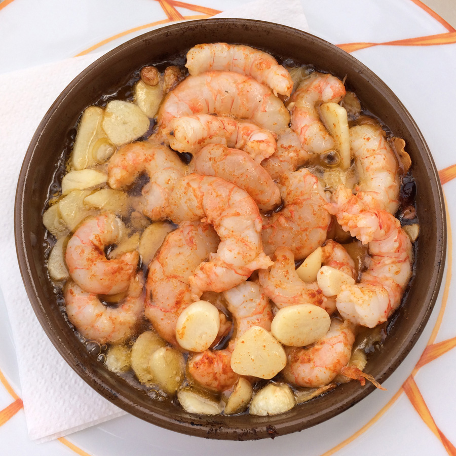

Home
Shipwreck Casserole

Description
It may not look fancy, but this shipwreck casserole is delicious, kid-approved, and ideal for hectic evenings. Prep is as easy as opening a few cans and unwrapping the meat, and it all comes together in one pot.
Ingredients
- 1 pound lean ground beef
- 1 (7.25 ounce) package macaroni and cheese mix
- 1 (14.5 ounce) can diced tomatoes
- 1 cup milk
- 1 cup frozen peas
- 1 cup frozen corn
- 1 teaspoon seasoned salt or to taste
- 1 cup shredded Cheddar cheese, divided
Steps
- Brown the beef in a large skillet over medium-high heat, breaking it up as it cooks.
- Stir in the macaroni-and-cheese pasta and cheese packet, tomatoes, milk, peas, and corn. Bring to a boil, then reduce heat, cover, and simmer until the pasta is tender, about 12 minutes.
- Season with seasoned salt, stir in half of the Cheddar cheese until melted, then sprinkle the remaining cheese on top.